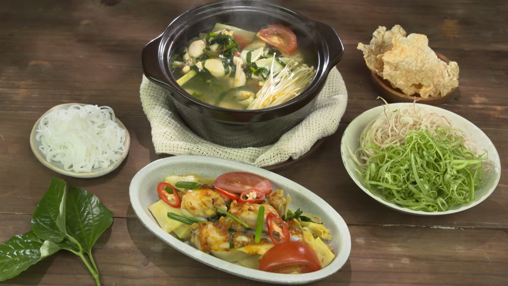
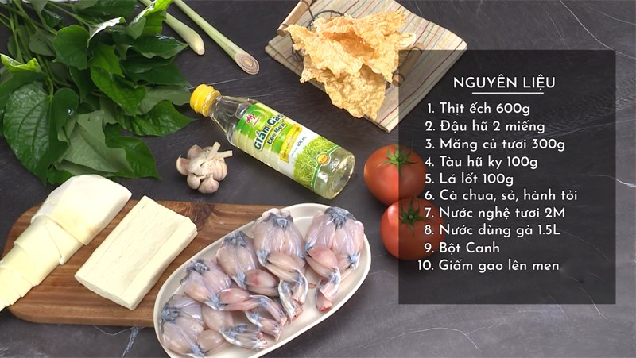

Lẩu ếch lá lốt
Lẩu là lựa chọn tuyệt vời cho những bữa ăn vào buổi tối, trời lạnh hay chiều mưa. Hãy tham khảo cách nấu lẩu ếch dưới đây.

Nguyên Liệu
- Thịt ếch: 600 gr
- Đậu hũ 2 miếng
- ......

Chế biến
- Sơ chế nguyên liệu
- Sả bạn nên đập dập và cắt thành từng khúc dài khoảng 5cm.
- Đậu hũ chia làm 6 khối vuông nhỏ. Cà chua thì cắt thành hình múi cau.
- Lá lốt bạn bỏ phần cuống cứng đi rồi cắt nhỏ tùy ý. Ngò gai và hành lá cắt khúc khoảng 1,5 cm.
- Măng bạn cắt thành lát rồi đem luộc trong khoảng 20 - 30 phút để không bị đắng và măng ra hết chất độc.
- Ếch thì bạn chặt nhỏ thành từng miếng vừa ăn.
- Ướp thịt ếch
- Bạn trộn đều thịt ếch với 2 muỗng canh nước nghệ tươi, 1 muỗng bột canh rồi ướp trong 5 - 10 phút.
- Xào ếch
- Đầu tiên bạn hãy phi 1 muỗng cà phê hành tím băm và tỏi băm với 1 muỗng dầu ăn.
- Khi hành và tỏi dậy mùi thì bạn bỏ thịt ếch vào xào chung.
- Sau khi xào ếch được 1 phút thì bạn cho măng đã luộc, 1 muỗng cà phê hạt nêm, 1 muỗng nước mắm,
1 muỗng sa tế. Rồi đảo đều hỗn hợp này lên, đến khi thấy thịt ếch săn lại thì cho ngò gai và hành lá vào đảo sơ xong tắt bếp.
- Nấu nước lẩu
- Bạn phi sả và hành tỏi băm còn lại với 2 muỗng dầu ăn.
- Khi có mùi thơm thì bạn cho cà chua vào đảo cùng, đến khi cà chua mềm thì bạn cho nước dùng gà vào.
- Tiếp theo là cho 1 muỗng bột nêm, 1 muỗng bôt ngọt, 1 muỗng đường và 3 muỗng giấm sau đó nêm nếm lại cho vừa miệng rồi đợi nước sôi là xong.
- Thành phẩm
- Lẩu ếch có vị chua chua, cay cay vô cùng hấp dẫn. Với món lẩu này bạn có thể ăn kèm với một số loại rau như rau muống bào, đậu bắp,... và bạn nên đun nước lẩu để lửa nhỏ trong toàn quá trình ăn, ăn đến đâu thì bỏ ếch, đậu hũ và lá lốt vào đến đó để ếch không bị bở và nhừ nhé.